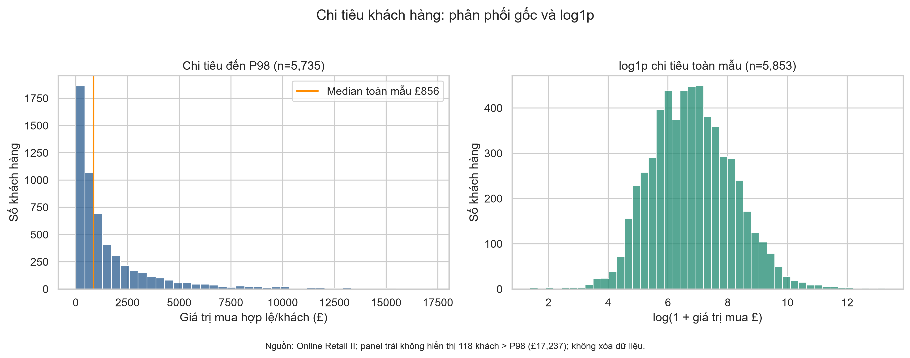
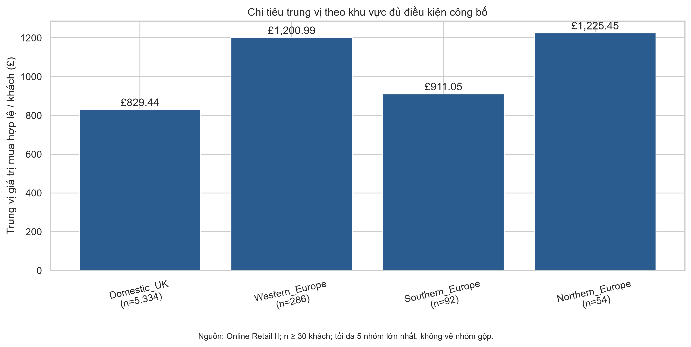
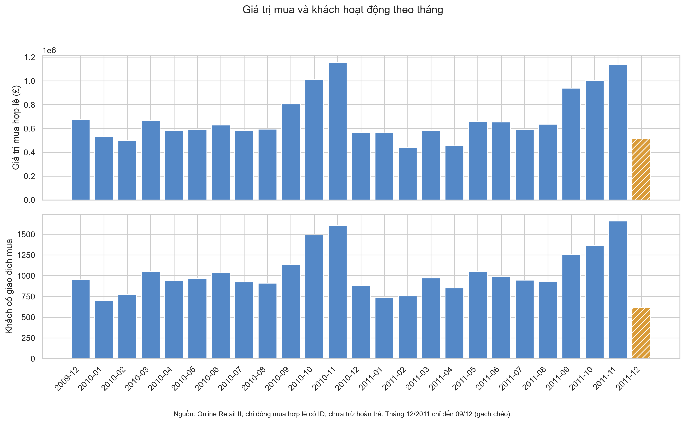
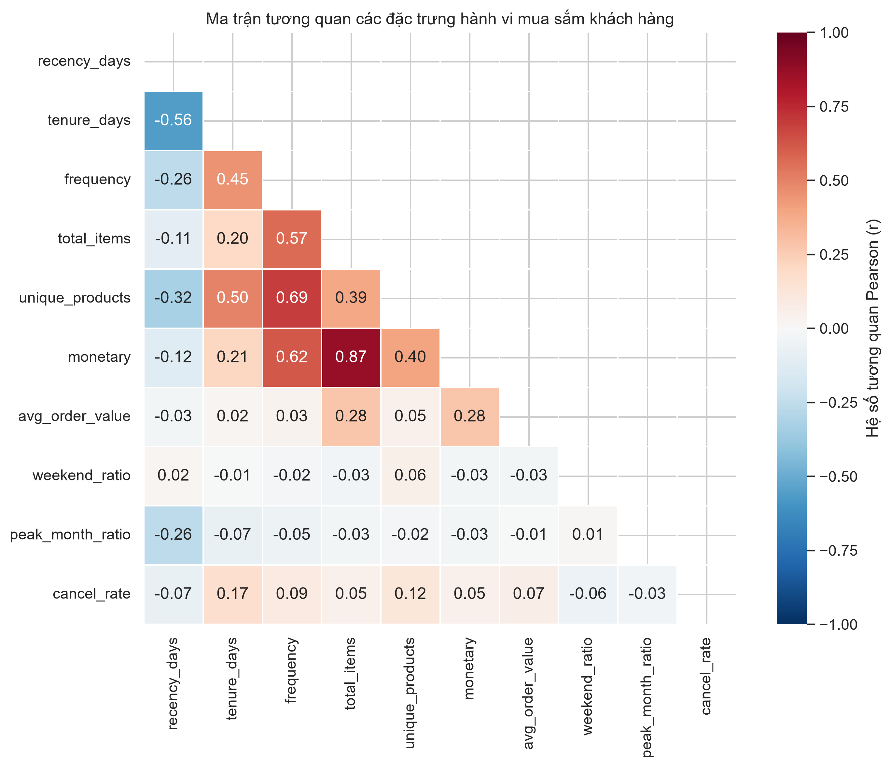
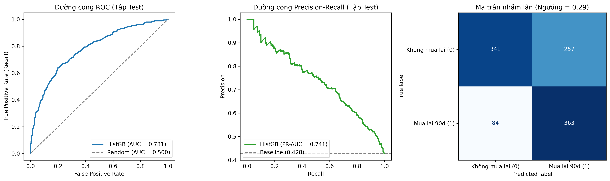
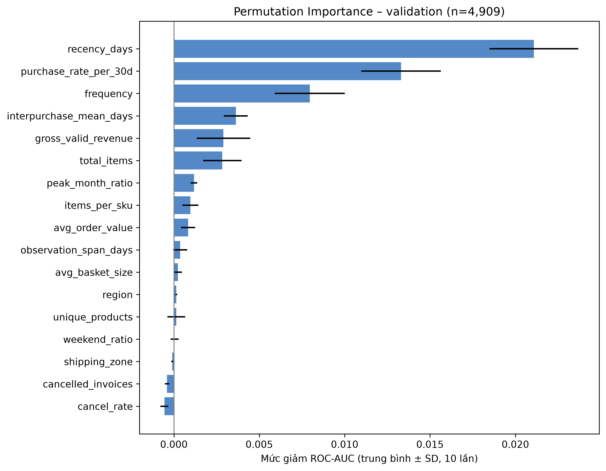
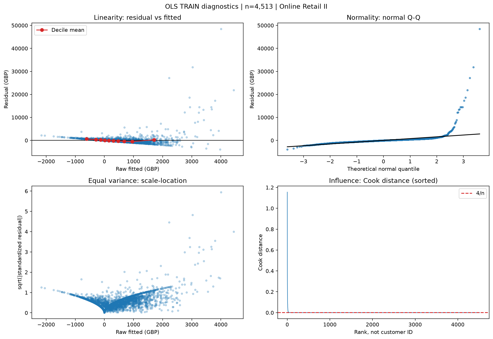
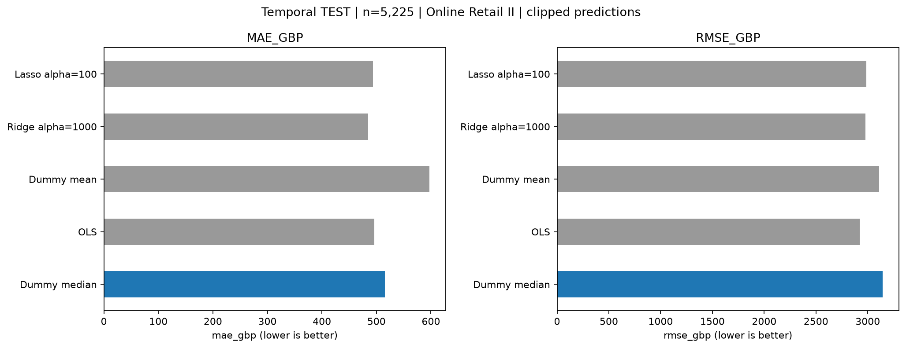
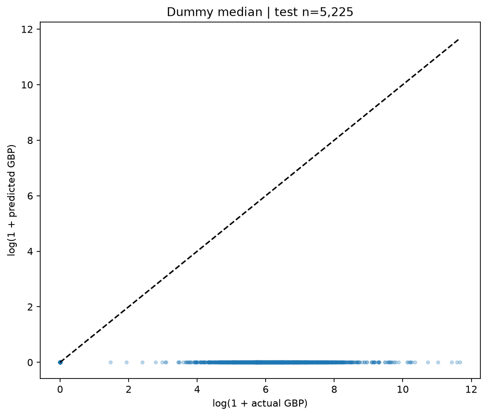

01Phân phối chi tiêu

Phân phối lệch phải mạnh; trung bình cao hơn trung vị. Giới hạn hiển thị không đồng nghĩa loại khách khỏi phân tích.
Online Retail II · 01/12/2009 đến 09/12/2011 · Phân tích hồi cứu từ giao dịch lịch sử, dự báo mua lại và chi tiêu trong 90 ngày.
Trang tổng hợp kết quả đã lưu trong notebook 01–06; không phải dashboard dữ liệu trực tiếp. Mở ảnh để xem kích thước gốc hoặc in trang thành PDF.
| Bước | Dòng bị loại |
|---|---|
| Trùng lặp sau chuẩn hóa | 34.335 |
| Thiếu Customer ID sau dedup | 235.151 |
| Giao dịch phi sản phẩm / điều chỉnh | 3.387 |
| Giá hoặc dấu số lượng không hợp lệ | 61 |
| Tổng | 272.934 |
Giữ giao dịch hủy hợp lệ, gắn is_cancelled; không xóa ngoại lai chỉ vì IQR. Có 776.844 dòng mua hợp lệ; 23 khách chỉ có đơn hủy không vào hồ sơ người mua. Tích hợp bảng quốc gia (99,71%) và lịch mùa vụ (100%) không tăng số dòng. Chi tiêu là gross purchase value bằng GBP, chưa trừ hoàn trả, không phải doanh thu ròng.
| Tập | Cutoff | Kết thúc nhãn (không gồm ngày này) | Khách |
|---|---|---|---|
| Train | 01/03/2011 | 30/05/2011 | 4.513 |
| Validation | 01/06/2011 | 30/08/2011 | 4.909 |
| Test | 01/09/2011 | 30/11/2011 | 5.225 |
Feature chỉ lấy từ lịch sử trước cutoff, nhãn từ hóa đơn mua mới trong [cutoff, cutoff + 90 ngày). Không dùng hồ sơ toàn kỳ làm feature. Cửa sổ nhãn không chồng lấn, nhưng cùng khách có thể xuất hiện ở nhiều snapshot; test là đánh giá hồi cứu, không phải tập khách mới độc lập.
Nguồn: Notebook 01, Notebook 04, README.

Phân phối lệch phải mạnh; trung bình cao hơn trung vị. Giới hạn hiển thị không đồng nghĩa loại khách khỏi phân tích.

Domestic UK: £829,44 (5.334 khách); Western Europe: £1.201,00 (286); Southern Europe: £911,05 (92); Northern Europe: £1.225,45 (54). Các khác biệt có thể chịu ảnh hưởng độ dài quan sát và cơ cấu khách mua buôn; không suy ra ảnh hưởng nhân quả của khu vực.

Quan sát xu hướng cuối năm, không xem tháng cuối là tháng trọn vẹn. Đây là tổng mua hợp lệ có ID, không phải doanh thu ròng.

Frequency và Monetary có Pearson khoảng 0,62 và Spearman khoảng 0,86. Các biến RFM có quan hệ cấu trúc; ngoại lai và phân phối lệch ảnh hưởng Pearson. Không diễn giải tương quan thành nguyên nhân.
Nguồn: Notebook 02. Biểu đồ khu vực mới được tái dựng từ trung vị và số khách lớn đã lưu ở notebook này.
Ba kiểm định hai phía, đơn vị là khách hàng; α = 0,05, Bonferroni cho ba phép chính (ngưỡng 0,0167).
| Giả thuyết | Phương pháp / kết quả | Kết luận |
|---|---|---|
| H1 · AOV quốc tế và UK | Mann–Whitney U; p = 1,9684 × 10−34; chênh trung vị +£128,79 (Intl − UK), CI 95% [+91,89; +165,07] | Có bằng chứng khác biệt phân phối. |
| H2 · Mua chủ yếu tháng 9–12 | Welch t-test trên log1p chi tiêu; p = 2,2899 × 10−18; Peak − Other = −0,3156 | Có khác biệt trên thang log; nhóm Peak thấp hơn ở ngưỡng 50%. |
| H3 · Thị trường và mua nhiều lần trong kỳ | Pearson Chi-square; p = 0,1945; Cramér's V = 0,017 | Chưa đủ bằng chứng bác bỏ H0. |
H1/H3 xét UK và International, loại nhãn Mixed/Unknown khỏi hai kiểm định này; H2 vẫn dùng nhóm đó. H2 đổi chiều ở ngưỡng 40% (+0,1253) và âm ở 60% (−0,5797); 59 khách trên P99 chiếm khoảng 32% gross. Không khẳng định nhân quả hay chiều H2 ổn định. Thiết kế A/B trong notebook là đề xuất, chưa thực nghiệm.
Nguồn: Notebook 03.
Random Forest thắng CV 5 fold phân tầng trên train theo ROC-AUC 0,7906. Sáu ứng viên gồm Dummy, Logistic Regression, Random Forest, HistGradientBoosting, k-NN, Gaussian Naive Bayes. Ngưỡng 0,480468678468 được chọn tối đa F1 trên validation (0,6602), giữ nguyên khi test. Không chọn lại mô hình theo test.
| Đánh giá | Accuracy | Precision | Recall | F1 | ROC-AUC | AP |
|---|---|---|---|---|---|---|
| Dummy test | 0,5721 | 0 | 0 | 0 | 0,5000 | 0,4279 |
| RF validation | 0,7659 | 0,6327 | 0,6902 | 0,6602 | 0,8204 | 0,7257 |
| RF test (0,5) | 0,7319 | 0,7342 | 0,5854 | 0,6514 | 0,7936 | 0,7639 |
| RF test (tuned) | 0,7301 | 0,7190 | 0,6064 | 0,6579 | 0,7936 | 0,7639 |

Test có 2.236 khách mua lại / 5.225. Ngưỡng tuned tăng recall và F1 so với 0,5, đổi lại precision và accuracy giảm nhẹ. Chiến dịch thực cần đánh giá chi phí FP/FN trước chọn ngưỡng.

| Feature | Mean AUC drop |
|---|---|
| recency_days | 0,0211 |
| purchase_rate_per_30d | 0,0133 |
| frequency | 0,0080 |
| interpurchase_mean_days | 0,0036 |
| gross_valid_revenue | 0,0029 |
Feature tương quan có thể chia sẻ độ quan trọng, giá trị âm nhỏ có thể do nhiễu. Không suy luận nhân quả hoặc khẳng định địa lý không có ảnh hưởng.
Nguồn: Notebook 04, Model Card Classification.
Chọn mô hình theo MAE CV trên train (5 fold). Dummy median thắng với MAE CV £326,40. Temporal test n = 5.225; 57,21% target bằng 0. Dự đoán được clip không âm khi báo cáo GBP.
| Mô hình khóa trước test | MAE (£) | RMSE (£) | R² |
|---|---|---|---|
| Dummy median (winner) | 515,3416 | 3144,9414 | −0,0276 |
| Dummy mean | 597,4218 | 3108,1793 | −0,0037 |
| OLS | 495,9144 | 2922,4550 | 0,1127 |
| Ridge α=1000 | 484,8469 | 2979,0627 | 0,0779 |
| Lasso α=100 | 493,8482 | 2986,9589 | 0,0731 |
Dummy median dự báo £0 cho mọi khách. R² âm, không phù hợp dự báo doanh thu. OLS/Ridge tốt hơn ở một số metric test nhưng không thay winner dựa vào test đã xem.



Nguồn: Notebook 05, Model Card Regression.
Selection bias: không biết số khách thiếu ID và không xác định cơ chế MAR/MNAR. Công bố phân hoạch disjoint UK và Non-UK / Unknown; nhãn gộp không đồng nghĩa International. Số quan sát mỗi nhóm tối thiểu 30, support lớp Classification tối thiểu 10; bảng quốc gia và khu vực mô tả dùng cùng quy tắc gộp nhóm nhỏ (dòng mua và khách distinct tương ứng).
| Nhóm test | n | Recall | FPR | ROC-AUC | MAE Regression (£) |
|---|---|---|---|---|---|
| Overall | 5225 | 0,6064 | 0,1773 | 0,7936 | 515,3416 |
| UK | 4773 | 0,5987 | 0,1729 | 0,7927 | 467,8408 |
| Non-UK / Unknown | 452 | 0,6810 | 0,2273 | 0,8004 | 1016,9378 |
Nhóm gộp recall cao hơn khoảng 8,22 điểm %, FPR cao hơn 5,44 điểm %, MAE cao hơn £549,10. Chỉ là thống kê mô tả; không chứng minh công bằng hay phân biệt đối xử. Generalization và suppression 172 khách cho k tối thiểu 10 trên quasi-ID giả định; đây không phải chứng minh dữ liệu gốc ẩn danh. Không thay tập test; lịch sử Git vẫn có thể chứa bảng cũ.
Nguồn: Notebook 06, Datasheet và model cards. Các kết quả mô hình là kết quả lịch sử đã lưu; cần chạy lại notebook sau thay đổi chính sách công bố.
Ưu tiên kiểm chứng chiến dịch chăm sóc khách theo recency và tần suất lịch sử bằng thử nghiệm có nhóm đối chứng; đo incremental lift và chi phí thay vì suy diễn nhân quả từ mô hình. Dùng chỉ số tổng hợp theo tháng để hoạch định mùa vụ có kiểm soát. Không dùng mô hình chi tiêu hiện tại để ra quyết định doanh thu, loại khách hoặc định giá cá nhân. Cần dữ liệu hiện hành, giao thức đánh giá mới và kiểm tra sai lệch trước triển khai.
Phạm vi: một nhà bán lẻ, dữ liệu 2009–2011, khách có ID và người mua đã có lịch sử. Kết quả không đại diện toàn bộ thương mại điện tử hay cold-start.
Tài liệu triển khai & tái lập · Data dictionary · Nguồn dữ liệu